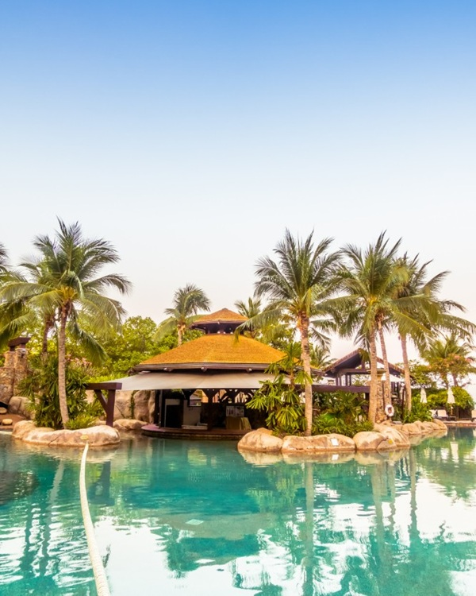
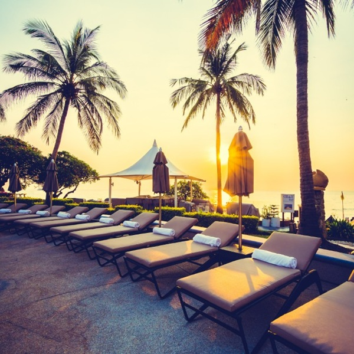

Assinie-Mafia tient dans une phrase : un cordon de sable de quelques centaines de mètres de large, coincé entre la lagune Aby et l'Atlantique, à environ quatre-vingts kilomètres à l'est d'Abidjan. C'est peu, et c'est exactement ce qui en fait la force — on y arrive en deux heures et on a l'impression d'avoir changé de pays.
Nous y avons ouvert notre premier resort balnéaire en 2017. Depuis, nous voyons passer des centaines de week-ends, réussis ou ratés. Les ratés se ressemblent beaucoup : partis trop tard, revenus trop tôt, programme trop chargé. Voici la version qui fonctionne.
Y aller : partez le vendredi, pas le samedi
La route est bonne jusqu'à Bassam, puis correcte jusqu'à Assinie. Le vrai sujet n'est pas l'état de la chaussée mais l'heure de départ : quitter Abidjan un samedi matin, c'est accepter deux heures de bouchons sur le pont. Partez le vendredi vers 16h et vous serez installé avant la nuit.
- En voiture : 2 heures depuis le Plateau hors heures de pointe.
- Notre navette privée : 45 000 FCFA l'aller pour quatre personnes, réservable avec votre chambre.
- En pirogue depuis Assinie village : la plus belle arrivée, dix minutes de traversée.
Quand y aller : évitez juin et juillet
La grande saison des pluies s'étale de mai à juillet, avec un pic en juin. La meilleure fenêtre va de décembre à avril : mer plus calme, ciel dégagé, et une chaleur sèche tempérée par l'alizé. Les week-ends de fin décembre se réservent en revanche deux mois à l'avance.


Le budget, sans mauvaise surprise
Pour deux personnes, deux nuits, en comptant l'hébergement, les repas et une activité nautique, prévoyez entre 380 000 et 750 000 FCFA selon la catégorie choisie. La villa privative devient plus intéressante que deux chambres dès que vous êtes quatre.
« Le meilleur moment d'un week-end à Assinie, c'est souvent le samedi vers 18h30 : la lumière tombe, le vent faiblit, et plus personne ne parle de repartir. » Aya Koffi, directrice générale du groupe Royal Hôtel
Le programme des quarante-huit heures
Vendredi soir
Arrivée, installation, puis dîner sur la terrasse face à la lagune. Rien de plus. La tentation de sortir le premier soir est la première erreur classique.
Samedi
Matinée nautique : jet-ski, paddle ou simple pirogue vers l' embouchure. Déjeuner de poisson braisé les pieds dans le sable. Après-midi de sieste assumée, puis coucher de soleil côté lagune — c'est de ce côté que le spectacle est le plus beau, contrairement à ce que l'on croit en arrivant.
Dimanche
Brunch tardif, dernière baignade, départ vers 16h pour éviter le flux de retour. Si vous avez le temps, un arrêt d'une heure à Grand-Bassam sur le chemin vaut largement le détour.
Trois erreurs à ne pas commettre
- Sous-estimer le courant : l'océan est puissant, baignez-vous dans les zones surveillées.
- Oublier les espèces : plusieurs prestataires locaux n'acceptent que le liquide ou le mobile money.
- Vouloir tout faire : deux activités par jour suffisent amplement.
Assinie ne demande pas d'organisation compliquée. Elle demande simplement qu'on lui laisse le temps de faire son effet — et ça, ça se joue au moment où l'on choisit son heure de départ.
3 commentaires
Serge Amani
Le conseil du départ le vendredi après-midi est le meilleur de l'article. On a testé deux fois, la différence est énorme sur le temps de trajet.
Aya Koffi — auteure
Merci Serge ! C'est le retour que nous font aussi la plupart de nos clients réguliers.
Awa Diallo
Article très utile. Serait-il possible d'avoir la même chose pour San-Pédro ? On hésite pour les vacances de Pâques.